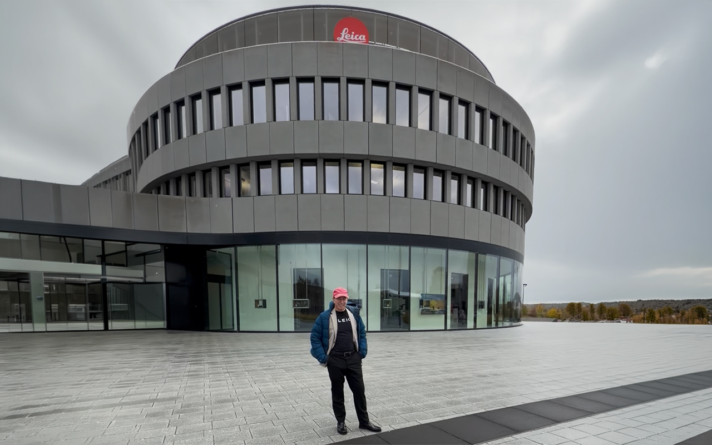

The special lens behind our best photographs.
Why a Wailea Photo image holds its color and detail even when shot straight into the sun.

The ten thousand dollar reason your photos can look amazing.
Clients can choose their sessions to be photographed with the Leica APO-Summicron-M 50mm f/2 ASPH. Lens — an apochromatic glass engineered to correct color fringing and hold true, accurate color across every wavelength of light. In Maui's harsh midday sun, or the last deep-red minutes before sunset, that correction is the difference between a photo that just looks nice and one that looks like it belongs in a magazine.
We sat down with Leica's legendary lens designer at the company headquarters in Wetzlar, Germany to discuss what makes his lens different.
"Lens performance on a very high level means no color aberration."
— Peter Karbe, Senior Managing Expert Optics and Platform, Leica Camera AG
A few frames, shot straight into the Maui sun.
A small sample of images captured through the APO-Summicron lens — true color and clean detail, even backlit by a Maui sunset.